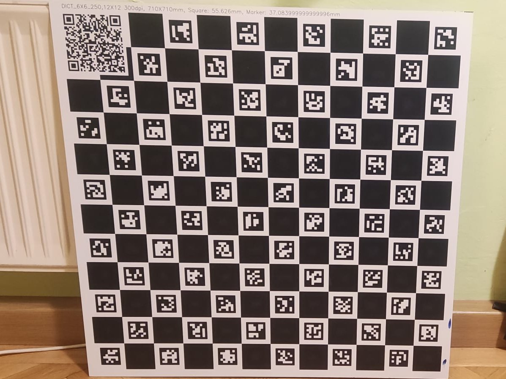
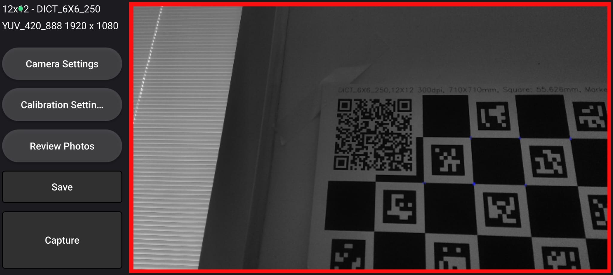
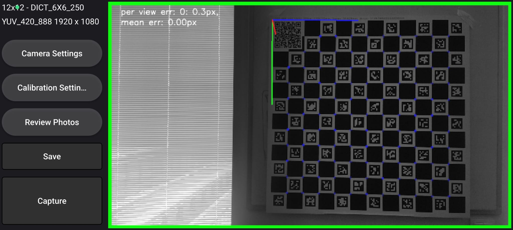
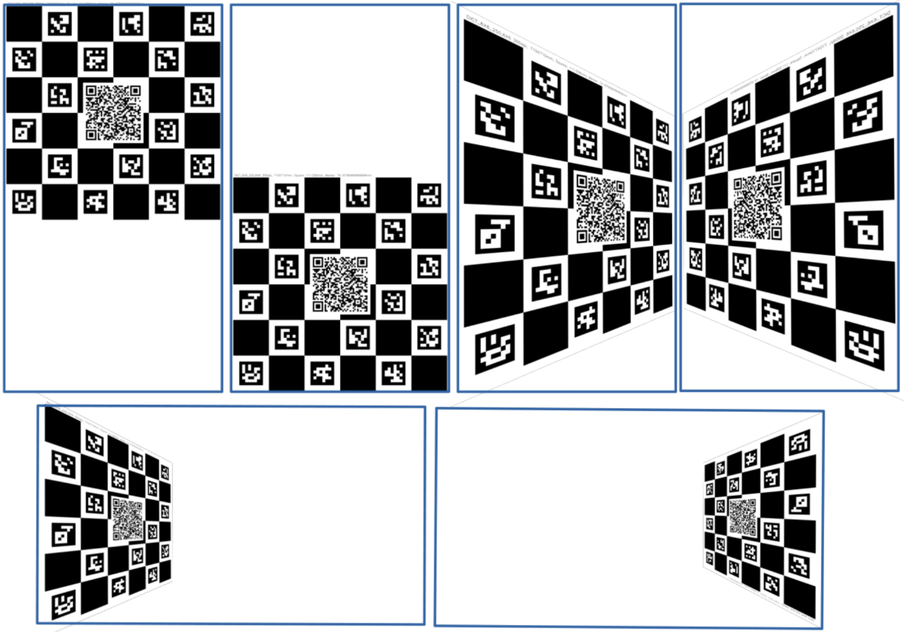
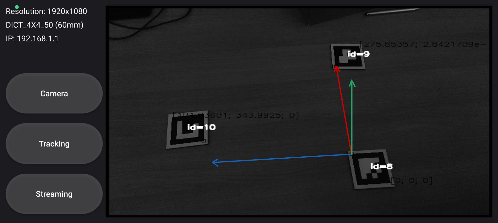

User Guide
While we try to keep the application as intuitive as possible, object tracking in 3D space is complex and requires some understanding of the system and steps to set it up correctly. This guide will help you to understand the calibration and tracking process using Kinest.
A. Camera Calibration
To ensure accurate and robust tracking, each camera must be calibrated. Calibration estimates the camera's field of view and lens distortion parameters. Calibration is a one-time process for each camera, resolution, and pixel format combination. Once completed, the calibration data can be reused for future sessions. Kinest contains an integrated calibration tool that simplifies this process.
1. Prepare the Calibration Pattern
To perform a calibration you will need a high-precision calibration pattern. Kinest uses Charuco (chessboard + ArUco) boards as calibration targets, with additional QR code which contains metadata about the board's layout and size. There are several options how to obtain the calibration board:



- Recommend option is to order high precision premade board from shop (Which will also support further development of the application).
- Make your own board by printing one of the patterns available in resources on rigid backing using a high-quality printer if you have access to one
- Or possibly display the pattern on a flat high-resolution PC screen. Which might be easiest but provides less accurate results.
The selection of the calibration pattern affects the accuracy of the calibration and depends on your needs. Large patterns are generally easier to use due to the large number of features, but require more space and are harder to transport. Small patterns are more portable, but require more precise camera positioning and may result in less accurate calibration. When you have the board ready, you can start the calibration tool and calibration process itself.
2. Select Camera and Format
From within the calibration application open Camera Settings and choose your desired camera, resolution. Depending on selected resolution different detection ranges, precision and latency may be expected. With higher resolutions provide better detection ranges but also higher latency. Currently recommend resolution is 1920x1080 which provides good balance between latency and detection range for most user cases.
Once you select the camera and resolution, the video stream should be visible in the application.
3. Load Calibration Pattern Metadata
Kinest uses Charuco calibration targets. Point the camera at the QR code on the calibration board. The application will automatically read and display the board's metadata in the top left corner of the screen.

4. Capture Calibration Shots
Position the camera to capture the board from desired angle and press the "Capture" button. The
button will turn green.
The app captures the image automatically once the camera is steady enough and enough calibration corners are
identified.
The calibration tool will provide an audio cue and reset the capture button color to indicate a successful
capture. Steady camera position is indicated by the border of the camera view turning green.
If for some reason it is needed to change the limits on percentage of detected corners, or the maximum movement
speed, these settings can be adjusted in Clibration Settings menu, but it could have negative impact on
calibration quality.

A typical calibration involves 6 shots:
- 2 from the front - which should cover the left and right sides of camera view, those help with distortion correction
- 4 from angled positions - Covering the top, bottom, left, and right edges of the camera view. Helping with establishing the overall perspective.

5. Review and Save Calibration
Use the "Review Photos" menu to inspect captured images. The goal is to cover whole view with calibration pattern, and have diverse set of shots. All shots should have approximatelly the same reprojection error (distance between projected and observed points assuming ideal calibration target). If outlier appears it can be deleted and redone. If satisfied, press the "Save" button to store the calibration.
B. Marker Tracking
Once calibration is complete, you can begin real-time tracking. Open the tracking application and follow these steps:
1. Select Camera and Resolution
Go to the "Camera" menu and select one of previously calibrated camera and resolutions. The video stream should now be visible.
2. Select Marker Dictionary and Size
In the "Tracking" menu:
- Select the dictionary from which your markers are generated.
- Choose the physical size of the markers.
Larger markers provide better detection range and accuracy, but require more space. The selected size must match the physical size of the used markers. Markers should be printed on rigid, flat surfaces. For optimal results, we recommend ordering them from our store.
3. Choose Reference Frame
Define the method how to establish the reference frame for pose estimation:
- Camera: Positions of markers are relative to the camera.
- Static 0XY: Origin (ID 8), X direction (ID 9), Y marker (ID 10). Used when reference frame is expected to be fixed (with only small or small changes)
- Dynamic 0XY: Same as above, but allows movement of camera relative to reference markers.
- Single Marker: Reference frame defined by one marker (less precise).

4. Set Data Output
Finally you can set where poses of detected markers will be sent.
Kinest supports sending data over UDP, which is suitable for real-time applications. Open the
"Streaming" menu and
set the IP address and port for UDP data streaming. The default port is 63232, but this can be
changed as needed.
System will start to immediately send position data in the Json format.
5. Output Format
The output format is a JSON object containing the marker ID and its position in the defined reference frame. The position is represented as a 3D vector (x, y, z) in meters and the orientation as a quaternion (w, x, y, z). Example:
{
"id": 1,
"position": {
"x": 0.5,
"y": 0.2,
"z": 1.0
},
"orientation": {
"w": 0.707,
"x": 0.0,
"y": 0.707,
"z": 0.0
}
}
Summary
If correctly setup Kinest offers an accurate and efficient way to track objects using visual markers, without any additional hardware. It is designed for use in robotics clubs and industrial settings. To obtain ready-to-use markers, calibration boards, and other accessories visit our Shop. If you have any questions or need assistance, please join our discord server: